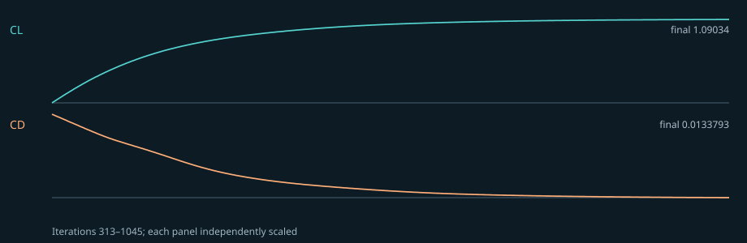

AIAA DPW-6 Case 1 · NACA 0012 precursor
Recorded condition-matched precursor · not a workshop submission
16,200 cells
1,045 SIMPLE iterations
Mesh check: warning
CL = 1.090340
CD = 0.013379
last-50 CL spread = 0.0588%
M = 0.150000
Re_c = 6,000,000
AoA = 10.0°
Executed 12 September 2026 in an isolated Linux container running OpenFOAM Foundation v10. Original source: AIAA DPW-6 requested cases, Case 1 ↗
Run setup
- OpenFOAM v10 tutorial NACA 0012 geometry and 16,200-cell mesh
- rhoSimpleFoam; compressible steady k-ω SST RANS
- Mach 0.15; Re_c 6,000,000; 10° angle of attack; 1 m chord
- T∞ = 300 K; U∞ = 52.1596945 m/s; p∞ = 180,684.56 Pa; μ = 1.82×10⁻⁵ Pa·s
Observed solver evidence
The solver log explicitly reports convergence in 1,045 SIMPLE iterations and the matching final field directory exists in the retained local run. Numerical completion does not establish physical correctness.

Engineering gates
| Solver Completion | pass |
|---|---|
| Mesh Quality | warning |
| Grid Independence | not established |
| Independent Validation | not established |
| Design Release | blocked |
Limitations and next validation work
- The official DPW-6 Case 1 asks for 500-chord farfield and a converged grid sequence. This tutorial-derived mesh extends about 50 chords upstream/transverse and 100 downstream; no grid sequence is complete.
- k-ω SST is not the NASA SA reference-model setup; point-vortex/farfield treatment is also not matched. CL/CD are therefore not a like-for-like NASA validation comparison.
- checkMesh reports one failed check: 710 high-aspect-ratio cells (maximum 42,738). No negative-volume or non-orthogonality failure was reported.
- An official NASA Family I grid was imported and patched separately, but its attempted rhoSimpleFoam run failed (wall-model floating-point exception, then nonphysical temperature after a boundary workaround). Failed logs are retained and linked; those grids are not used for the reported coefficients.
- No Cp/Cf comparison, independent physical reference comparison, or design-release validation was performed.
Evidence integrity
SHA-256 hashes below refer to the linked public copies of the retained local logs and data.
| log.checkMesh | 7ae40720d030884e491f5896e02325d35768f2f23ac07b3a8bdcbebcfc670c4e |
|---|---|
| log.rhoSimpleFoam | df6642a8df48f7207d648c1f799a5f3872cc645efc14fdc47913dc8bf08e65f0 |
| forceCoeffs.dat | a70bd483b94fa9d974f1613254388c6ff00fea59a180c3d6d73202f89776e2c8 |
| force-history.svg | 5d96dc686ad46b1dd7872d52701720dd31d0ff19505add86c512d3c7b1a4ab87 |
| failed-nasa-grid-log.checkMesh | fe91264a535c0ba8d58e7e81af0d19504ec1233e24508908cdfd0680e7efc08b |
| failed-nasa-grid-log.rhoSimpleFoam | ed0c711a372d1743b6d452f1b4808d00d9505aad881caf882ff4ec0f7477df92 |
| failed-nasa-grid-log.rhoSimpleFoam.fixedOmega | 86027e0bb68823da06aba2fd4c9859cff4ce48c2773b5bfbd787a8e9531d680d |
{kind=link}
Editing this case in Aero creates a new input revision. This document remains historical until a fresh solve produces a new proof.